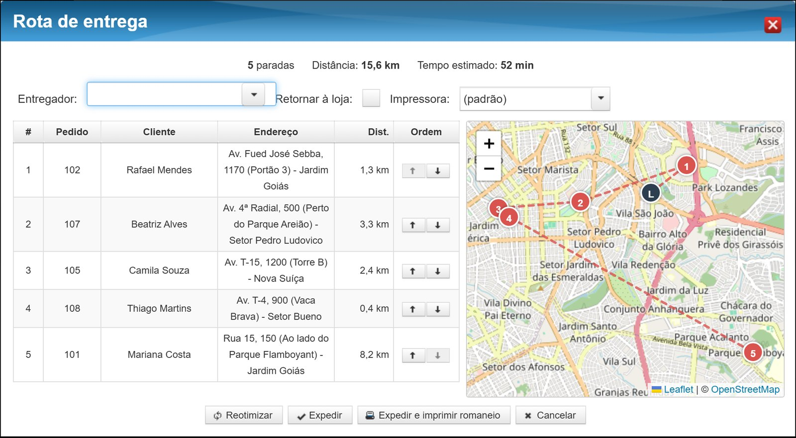
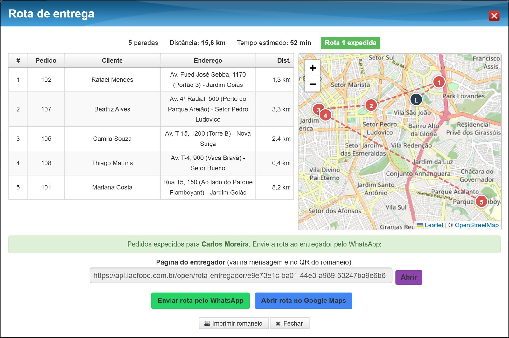
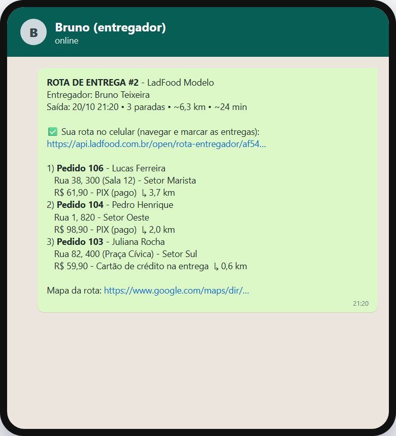
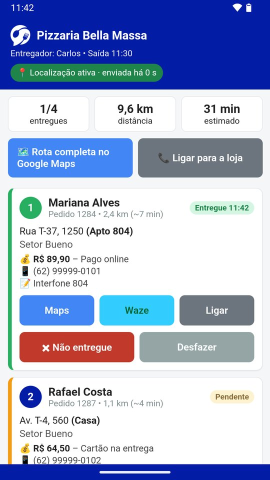
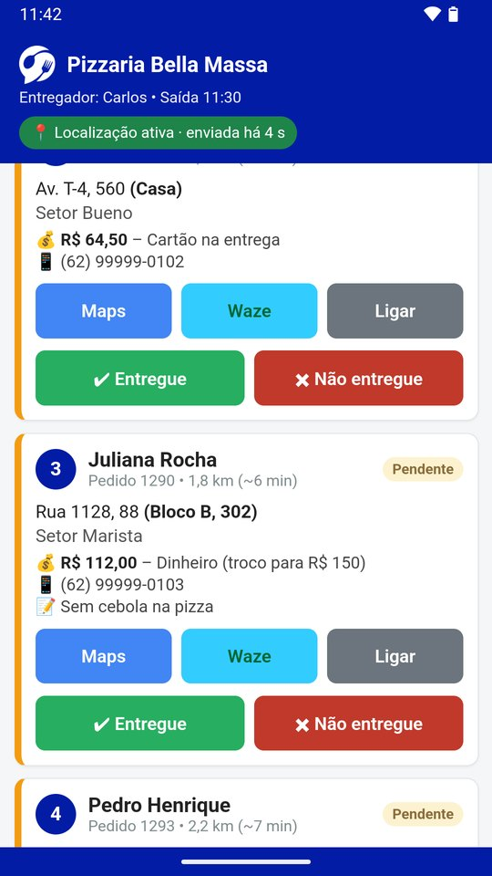
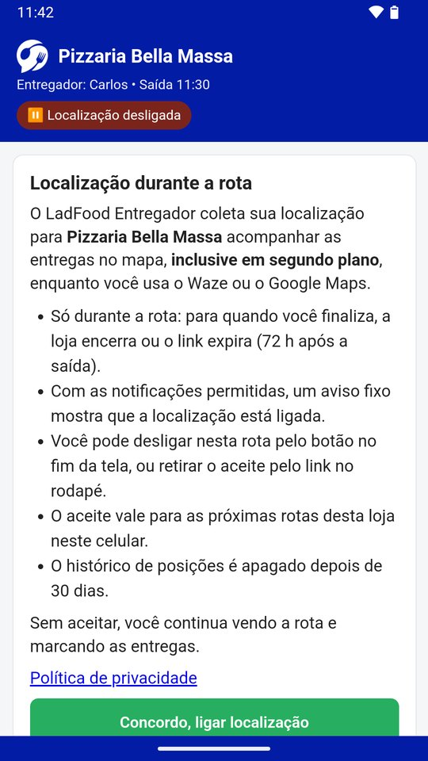
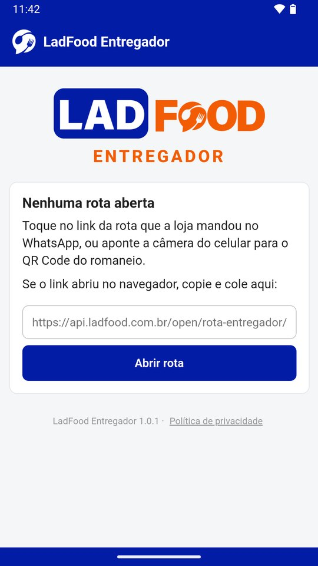
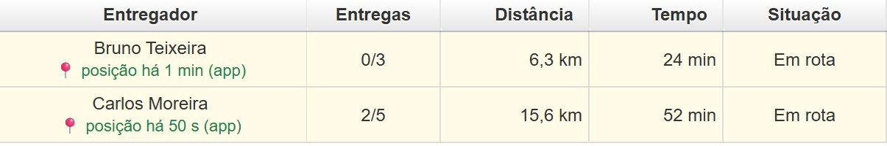
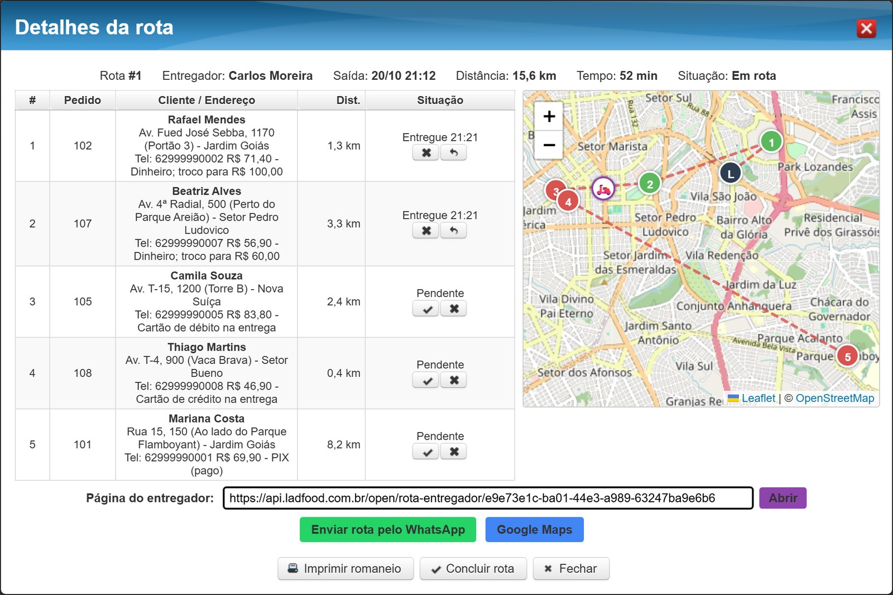

O LadFood monta a rota de entrega no PDV, manda a rota pronta para o WhatsApp do entregador e, com o app LadFood Entregador, mostra na loja onde ele está durante a rota.
Sexta, 20h. Seis pedidos prontos no balcão, um motoboy saindo. Quem entrega primeiro?
Na maioria das lojas com entrega própria, quem decide é o motoboy, de cabeça, olhando os cupons. A loja não sabe a ordem, não sabe quanto a volta deve levar e não sabe onde ele está quando o cliente liga perguntando pelo pedido.
Cupons na mão do motoboy, ordem no improviso, endereço ditado ou fotografado, e o "cadê meu pedido?" respondido com uma ligação para o entregador no meio do trânsito.
Ordem calculada a partir da loja, rota escrita no WhatsApp com endereço, telefone e pagamento de cada parada, romaneio na ordem, entregas marcadas pelo celular e o entregador no mapa do PDV.

Tela real do PDV 12.16.34, com pedidos e clientes de demonstração.
A janela mostra as paradas na ordem calculada a partir da loja, a distância de cada trecho, a distância total e o tempo estimado. No mapa, a loja (L) e cada parada numerada. Ali mesmo o operador:
Expedir faz o mesmo que o Expedir de sempre (pedidos expedidos com o nome do entregador) e grava a rota.
Como a ordem é calculada. Pela distância entre os endereços, não pelo trânsito do momento. Até 8 paradas o sistema testa todas as ordens possíveis; acima disso usa uma heurística e depois melhora o resultado. O caminho rua a rua continua sendo o Google Maps ou o Waze no celular do entregador.
Expediu, um botão abre o WhatsApp do entregador com a rota escrita.

Tela real do PDV, com dados de demonstração.

Android, grátis na Play Store. O entregador segue a rota no celular e a loja vê onde ele está.




Capturas da ficha do app na Play Store (versão 1.0.1).
Cada parada abre no Google Maps ou no Waze, e o botão Ligar chama o cliente. Entregue ou Não entregue (com motivo), e Desfazer se marcar errado.
Com o aceite, a posição vai para o PDV mesmo com o Waze ou o Maps aberto. Sem sinal, o app guarda as posições e envia depois.
Depois da primeira rota aberta no app, a rota nova chega por notificação.
Localização só com aceite e só durante a rota. Para quando o entregador finaliza, quando a loja encerra ou quando o link expira (72 h depois da saída). O histórico de posições é apagado depois de 30 dias. Sem aceitar, ele continua vendo a rota e marcando as entregas, só não aparece no mapa. É o argumento para o dono que tem medo de o motoboy recusar.
"Cadê meu pedido?" respondido olhando a tela, sem ligar para o entregador.


Telas reais do PDV com dados de demonstração. A posição do entregador simula o app.
Quem vê o entregador no mapa é a loja. O cliente final não recebe link de acompanhamento da entrega.
A ordem e o tempo são estimativa pela distância. O caminho rua a rua é o Maps ou o Waze do entregador.
Só Android. No iPhone, o link abre a página no navegador (paradas, navegação e marcação), sem enviar a localização.
O sistema não monta sozinho os lotes por região. Quem escolhe os pedidos de cada rota é o operador.
Botão Rota no Detalhar e menu Vendas > Rotas de Entrega. Não aparece? Atualizar ou ligar "vender pedido delivery" no perfil.
Latitude e longitude da loja cadastradas. Sem isso, a ordem é calculada só entre os pedidos.
Cadastrados como funcionário entregador, com o celular certo: é para ele que vai o WhatsApp.
2 ou 3 pedidos reais, Expedir, WhatsApp e a tela Rotas de Entrega aberta.
O pedido sai do balcão na ordem certa, a rota chega pronta no WhatsApp do motoboy e a loja sabe onde ele está, sem cadastro novo, sem senha e sem outro sistema.